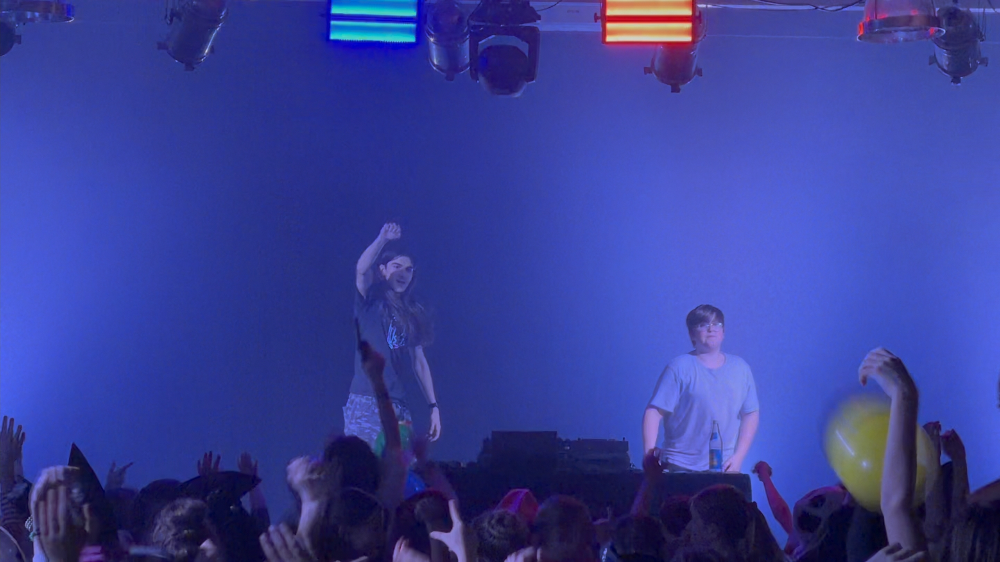
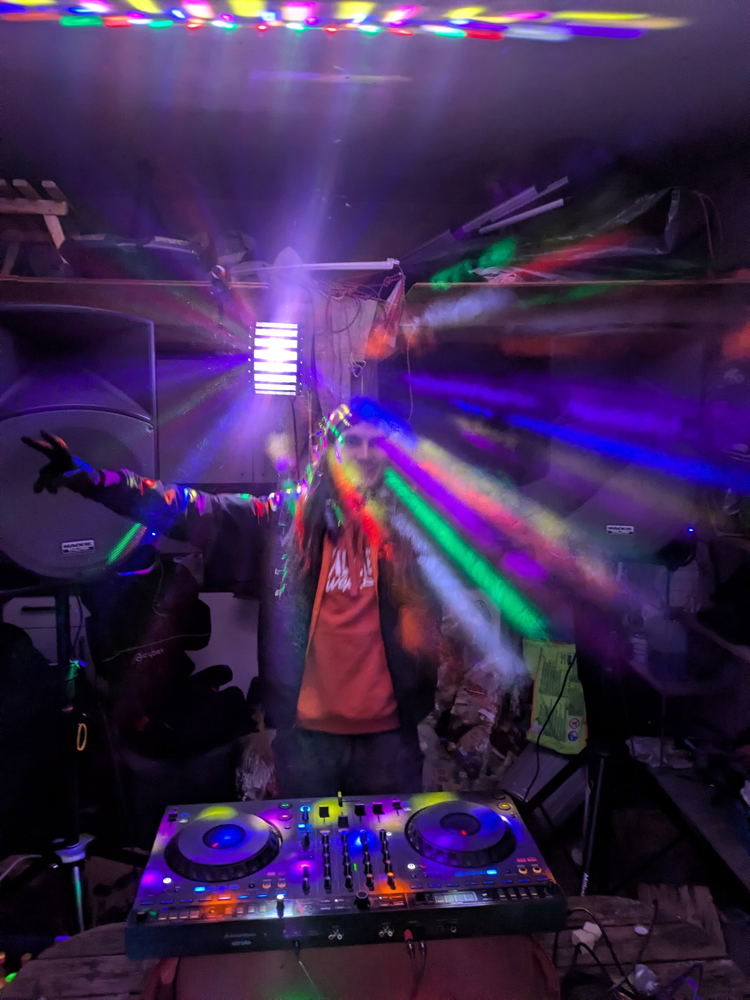
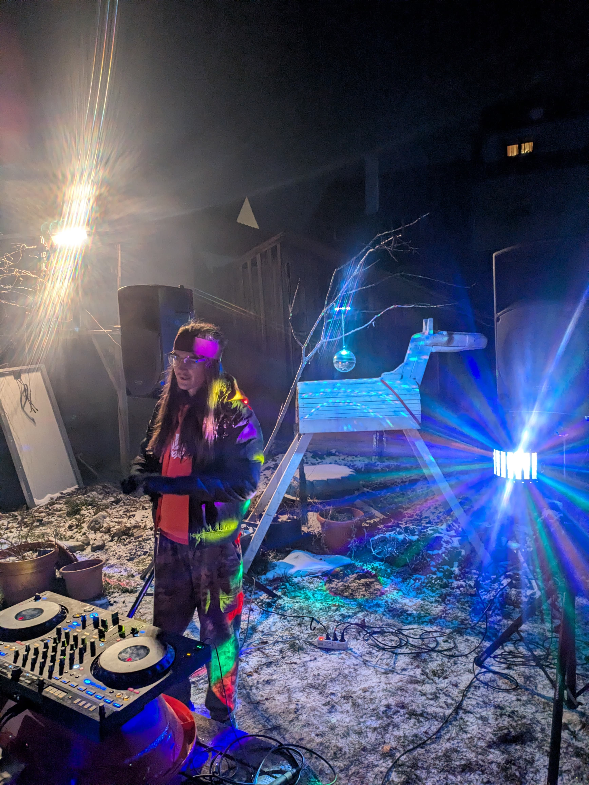
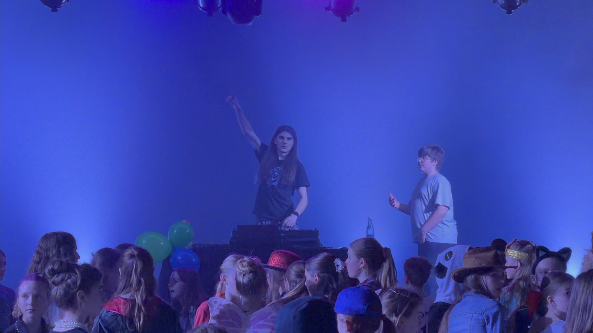
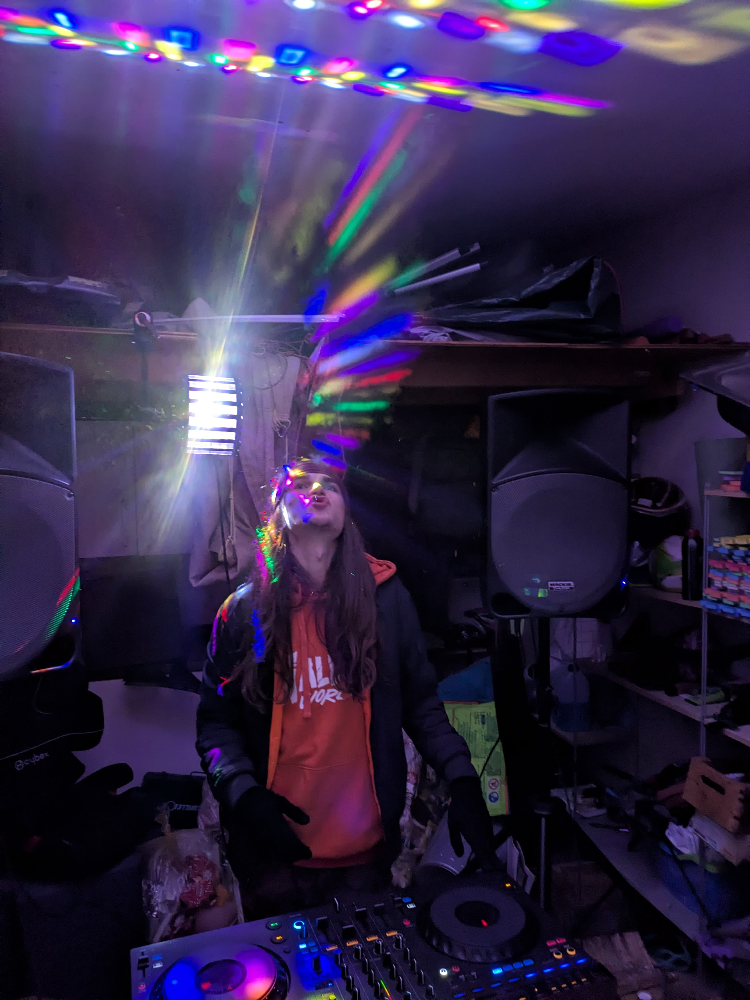
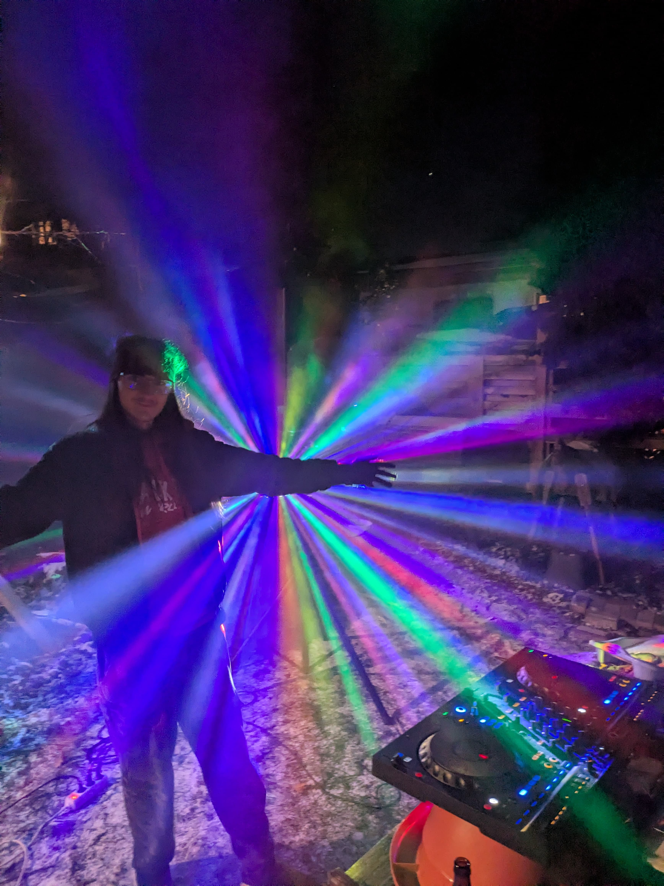
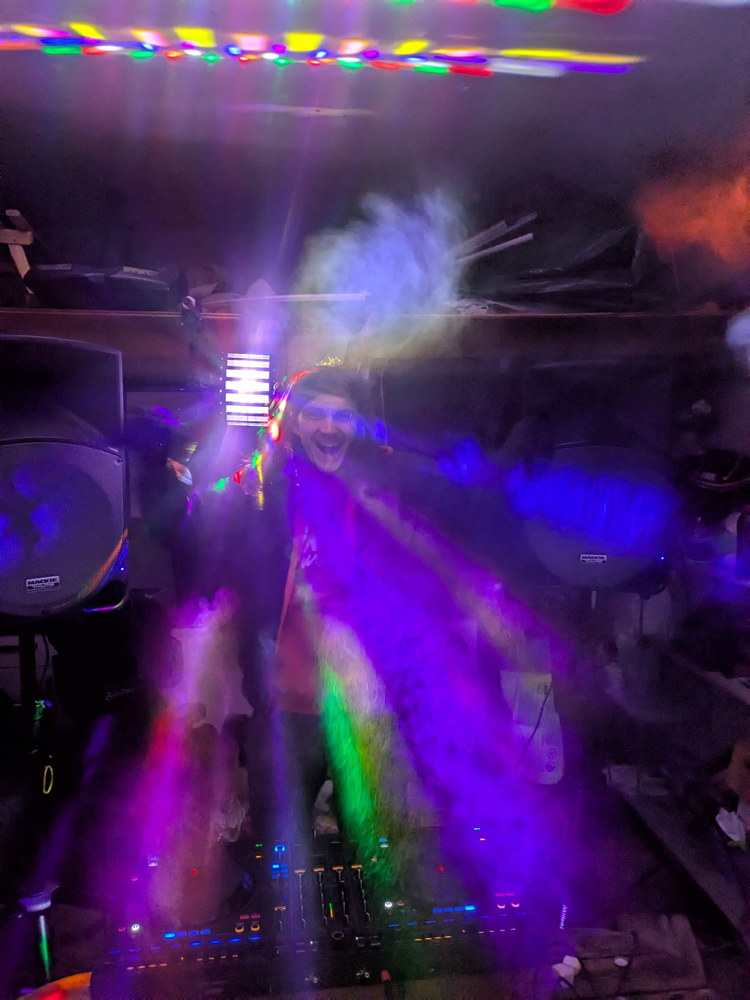
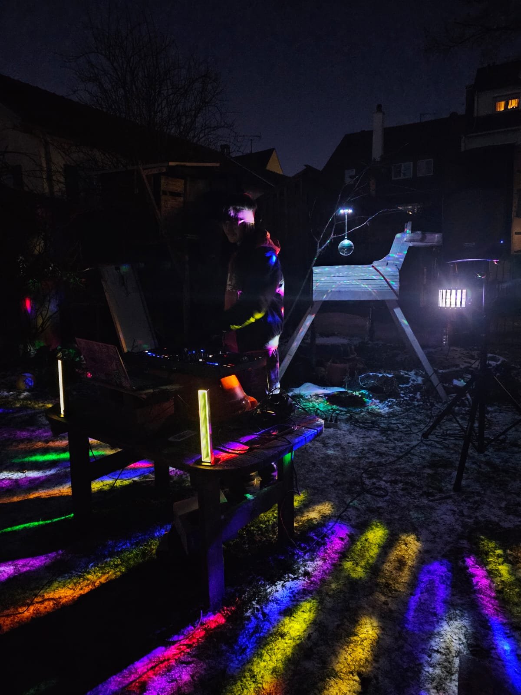

Fotos & Videos aus echten Shows, Setups und Backstage-Momenten. Klicken Sie auf ein Medium für die große Ansicht mit Beschreibung.

Live-Moment auf einer Show mit dem Big Stage Experience Paket mit klarer Sicht auf OperatorRet und Crowd. Genau diese Energie ist der Kern eines solchen Sets.

OperatorRet hinter den Decks im Indoor-Sorglos-Paket mit Derby, Lautsprechern und Nebel. Kompakt und mit starkem Club-Feeling.

OperatorRet am Outdoor-Sorglos-Paket mit sauberem Derby-Lichtbild. Ideal für Gartenpartys.

Live-Moment auf einer Show mit dem Big Stage Experience Paket mit klarer Sicht auf OperatorRet und Crowd. Gute Referenz für Licht und Präsenz bei diesem Premium Paket.
POV von einem Big-Room-Drop direkt aus dem Set. Außerdem ein Beispiel für das Performance-Only-Paket bei einem Outdoor-Venue.
OperatorRet auf der Stage voll im Flow. Zeigt den Live-Charakter den ich mitbringe.

Nebel plus Derby-Beams im Sorglos-Paket erzeugen den typischen Rave-Look. Besonders stark bei dunkleren Indoor-Locations wie hier.
On-Stage Transition bei der Big Stage Experience mit Crowdwork bis zum Drop. Man sieht, wie OperatorRet die Energie aufbaut und das Publikum einbindet.
POV von einem Big-Room-Drop direkt aus dem Set. Zeigt Freaks von Timmy Trumpet. Ein Beispiel für das Sorglos-Paket im Outdoor-Bereich.
POV Setup-Einblick aus einer Gartenparty mit dem Sorglos-Paket. Zeigt, wie kompakt das System auch im Außenbereich funktioniert.

OperatorRet vor Outdoor-Derby-Beams im Nebel für einen klaren Show-Fokus. Gerade bei Dämmerung kommt dieser Effekt besonders gut.
Clip von OperatorRet mit der Big Stage Experience mit nostalgischen Vibes, Crowdwork und klarer Energie. Gute Referenz für den Charakter der Musik außerhalb von Big Room und anderem Festival EDM.

Jump-Moment bei OperatorRet mitten im Set, wenn die Energie komplett oben ist. Genau solche Peaks machen den Abend unvergesslich. Hier ist das Sorglos-Paket im Einsatz.
POV von einem Big-Room-Drop direkt aus dem Set. Zeigt Tremor von Dimitri Vegas & Like Mike. Ein weiteres Beispiel für das Sorglos-Paket im Outdoor-Bereich.
Mini-Derby mit Nebel zeigt die Strahlen deutlich und schafft sofort Atmosphäre. Inklusive im Sorglos-Paket.
Beispiel für eine nicht optimale Erhöhung am Tisch bei einem Outdoor-Event mit Sorglos-Paket. Genau deshalb sind stabile DJ-Booth-Bedingungen im Rider wichtig.
Crowd-POV eines Sorglos-Paket-Setups bei einer Garten-Location. Guter Eindruck von einem Big Room Drop, hier The Fever von Bassjackers.
Der Effekt des Mini-Derby ohne Nebel als direkter Vergleich. So sieht man den Effekt unter normalen Outdoor-Bedingungen an der Hauswand tanzen.

Outdoor-Perspektive von OperatorRet mit Sorglos-Paket. Praktischer Eindruck vom realen Platzbedarf.
Wie DJs schlafen: humorvoller Moment hinter den Kulissen.